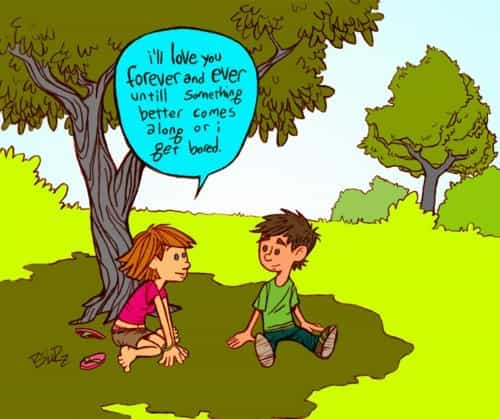

Anton Hagen is a multilingual writer from the UK whose joys and woes living in different parts of Europe inspired him to contribute philosophical pieces to the manosphere, with the odd caustic joke.


We’ve all seen girls responding ecstatically to the aloof, mysterious man with his hand-reading routines, negging, and general masculine allure. We’ve also seen them having no qualms in hopping from man to man, and flaking mercilessly on nice guys simply out of boredom and an insatiable lust for excitement.
From where did this frenzied attitude come from exactly? As stated in the ROK community beliefs: the elimination of traditional sex roles and unlimited mating choice unleashes promiscuity and other negative behaviors. This certainly gives girls the liberty to recklessly ride the carousel, but the sheer extent of their fickleness, impulsiveness and selective hypergamy makes one wonder how this mindset flourished so extensively.

We have indeed seen this erratic behavior somewhere else: namely, in front of the rectangular screen. There are hoards of bored, unsatisfied girls out there, changing channels mindlessly, swiping left and right, and clicking link after link after link. If you’ve read this far, you’re already doing better than a lot of them out there.
It is so striking to see the similarities between modern girls’ attitudes to men and to 21st Century entertainment that it deserves to be looked at in greater detail. Let us look at some modern technological developments which have had a great effect on the modern girls’ psyche over the last twenty to thirty or so years.
The days of having only one or two channels are long over, at least for the First World. We no longer have to compromise our tastes in order to put up with one particular channel; we can change them, sometimes hundreds of times over until we are satisfied.
This process of “zapping” has become so entertaining in itself, that it has become more fun to hop around different TV networks than to watch a full program. Long documentaries and films are now reserved for the old and the tired; TV companies have had to adapt, incorporating short, cheap gags into their programming in order to hold the short attention spans of the people.
The girls who grew up flicking back between Cartoon Network, Nickelodeon, and Boomerang use this exact same mindset when choosing men. Being offended at a girl flaking is like being angry at them for changing the channel on a TV; it’s a shame but it’s inevitable.

Over the last decade, we have seen the rise of the deeply vulgar, televised Talent Contest. Essentially, if the schmucks that enter these things do not satisfy the audience’s unquenchable need for excitement, they are humiliated and booed off the stage.
The contestants therefore have to cater to the debased needs of the viewers, becoming repulsive freaks or choreographing elaborate, yet highly inane dance-routines. Girls incorporate the Talent Contest mentality into their choices of men: anything which does not provide them with an instant thrill is disposable, useless and meaningless.
Further down the spiral, we encounter Youtube, currently celebrating its tenth anniversary. Youtube has a multitude of brilliant content: full-length documentaries, operas, and historical speeches. However, the most successful videos are those which continue the trend started by cable TV and Talent Contests: short, anodyne jokes without meaning.
The quantity of videos on the website has now made it fully possible to ditch anything which does not give you 100% instant gratification. The near-infinite choice on Youtube allows you to change videos many times a minute if they do not satisfy immediately. This was simply not possible until very recently.

Finally, we come to a piece of machinery, universally despised by the manosphere, and rightly so. Smartphones are the ultimatum of instant gratification. Any app, article, Tinder profile or arrangement of pixels can be cast away in an instant if it fails to provide the instant boost of serotonin in the brain.
Entertainment has been a catalyst in the modern flaking epidemic, starting with Cable TV and culminating in Tinder and the smartphone. We no longer have to work for our gratification; listening to an old man tell stories or playing a long board game is now considered tedious by most. It is therefore foolish to act like the wise man or the chessboard on a date or in the club, (as we have observed recently) for the smartphone app or the thirty-second Youtube clip will get more attention.
In our post-Lady Chatterley society, sex is treated as entertainment and not a means to monogamous commitment. We can therefore draw parallels between the sexual market and modern entertainment, since they now function in the same way and have the same purpose, satisfying the same urges.
The common denominator of modern entertainment forms is the removal of persistence and compromise. Girls have adapted to being able to swipe away anything that doesn’t give them spontaneous gratification. If you are shy, polite and quiet, you will get zapped.
It has also removed empathy from the choice: just as an out of tune singer is booed off the stage on America’s Got Talent, you will be shown no more sympathy if you don’t give them the tingles straight away. Girls have grown up not needing to compromise at all, so they will not do so with you.

God, he’s talking about Tauldstoy again!
They don’t have to invest any time into hearing about your views on Russian Literature or the Economic crisis. As girls have adapted to zapping around their forms of entertainment, why on earth would they take a different attitude towards dating and bonding?
Read More: The Role Of Modern Entertainment In Beta Indoctrination
{kind=link}
{kind=link}